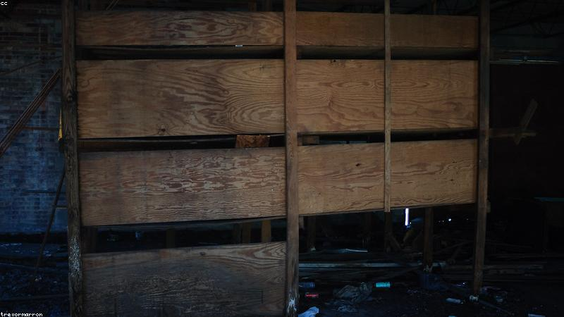

NO. 07
第七天的寄信人
人走後，信才到。
父喪第七天，他收到一封平信，寄件人是父親。信裡寫：『別動書房抽屜第三格。』
他打開，裡面是另一封沒寄出的信，給二十年前的自己，預言了今天的死法。
他冷汗涔涔——抽屜更深處，還有寫給『下一個第七天』的信，收件人是他。
信封尚溫。

父喪第七天，他收到一封平信，寄件人是父親。信裡寫：『別動書房抽屜第三格。』
他打開，裡面是另一封沒寄出的信，給二十年前的自己，預言了今天的死法。
他冷汗涔涔——抽屜更深處，還有寫給『下一個第七天』的信，收件人是他。
信封尚溫。